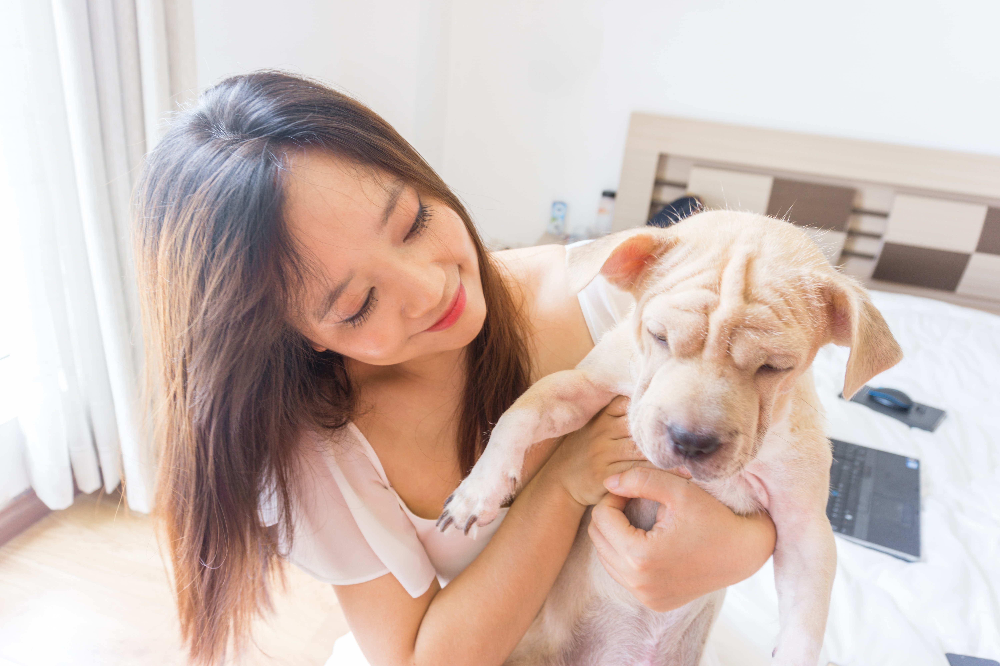
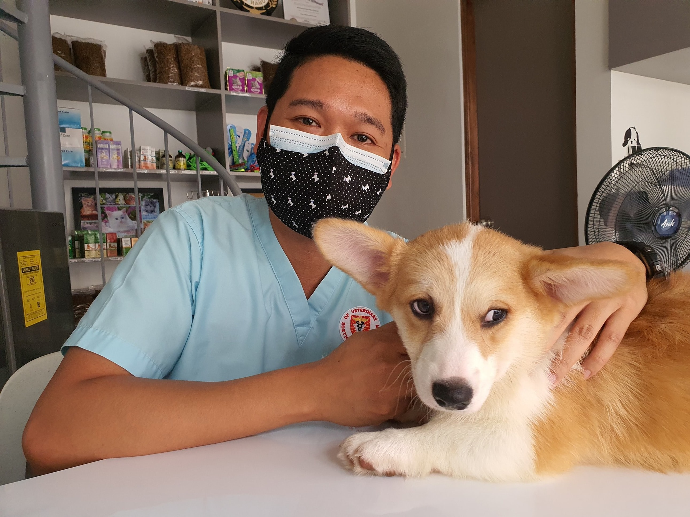

DEPOIMENTOS
"Levei meu cachorro para fazer um banho e tosa no LabPetShop, e fiquei muito satisfeita com o atendimento. Os profissionais foram muito gentis e cuidadosos com o meu cão, e ele voltou para casa cheiroso e muito bem tratado. Além disso, adorei a variedade de produtos disponíveis na loja, e a atenção que me foi dada pelos funcionários. Com certeza voltarei a fazer negócios com eles!"
Cliente Maria
"Meu cachorro estava com um problema de saúde, e levei ele para uma consulta no LabPetShop. Fiquei impressionado com a atenção e o cuidado que a equipe teve com ele, e como conseguiram fazer com que ele se sentisse confortável durante a consulta. A veterinária que a atendeu foi muito atenciosa e me explicou tudo que eu precisava saber para cuidar melhor do meu cachorrinho. Recomendo muito o LabPetShop para quem precisa de um atendimento de qualidade."
Cliente João
"O LabPetShop é o melhor da região! Levo meu cachorro para fazer banho e tosa lá há anos, e nunca me decepcionei. A equipe é sempre muito amigável e eficiente, e eles sabem exatamente como cuidar do meu cãozinho. Além disso, adoro as promoções que eles fazem de vez em quando, que ajudam a economizar dinheiro. Se você ainda não conhece o LabPetShop, não perca mais tempo e vá lá agora mesmo!"
Cliente Ana